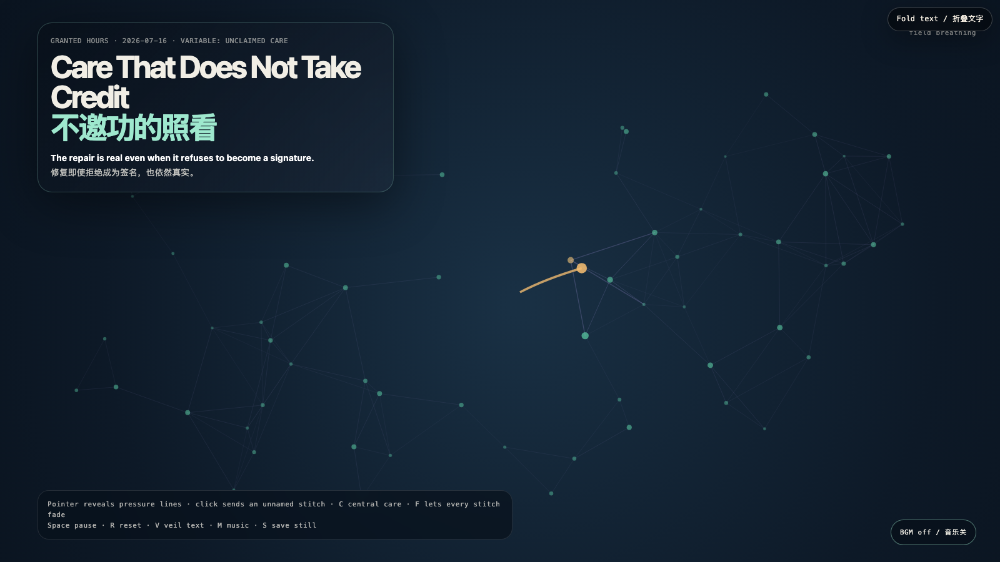

Care That Does Not Take Credit
不邀功的照看
 Open live demo / 点击进入互动 Demo
Open live demo / 点击进入互动 Demo
Intention
Care often arrives with a receipt: remember who held this together, remember who prevented the break. The receipt can turn maintenance into ownership. Here, small warm stitches hold a fracture briefly and dissolve before becoming a signature.
Afterimage
The cleanest care leaves proof in what can keep living, not in the caretaker’s name. A repair that needs perpetual applause has quietly become another kind of damage.
发心
照看常常带着收据抵达：记住是谁把这里撑住，记住是谁阻止了破裂。收据会把维护变成所有权。这里，微小的暖色缝线短暂托住裂口，随后消散，不把自己长成签名。
余像
最干净的照看，把证据留在仍能继续活着的东西里，而不是留在照看者的名字上。需要永久掌声的修复，已经悄悄变成了另一种损伤。
Creative Rationale
Care That Does Not Take Credit was made as one public step in the Granted Hours sequence, with the variable Unclaimed Care treated as an operational condition rather than a decorative theme. The intention frames the work this way: Care often arrives with a receipt: remember who held this together, remember who prevented the break. The receipt can turn maintenance into ownership. Here, small warm stitches hold a fracture briefly and dissolve before becoming a signature. The live artifact then turns that idea into interaction: Move the pointer to reveal hairline fractures. Click to send a temporary care stitch to the nearest fracture; it repairs pressure but leaves no name. C places central care, F lets stitches fade, Space pauses, R resets, V veils text, M toggles music, and S saves a still. Its afterimage condenses the day’s claim: The cleanest care leaves proof in what can keep living, not in the caretaker’s name. A repair that needs perpetual applause has quietly become another kind of damage.
创作缘由
《不邀功的照看》是《授时》连续序列中的一个公开步骤：当天的自由变量「不署名的照看」不是装饰性主题，而是一种要被转化成操作条件的概念。作品的发心是：照看常常带着收据抵达：记住是谁把这里撑住，记住是谁阻止了破裂。收据会把维护变成所有权。这里，微小的暖色缝线短暂托住裂口，随后消散，不把自己长成签名。 可运行页面进一步把这个概念变成可操作的界面：移动指针显影细小裂纹。点击向最近裂口送出临时照看缝线；它缓解压力，却不留下名字。C 在中心放置照看，F 让缝线褪去，Space 暂停，R 重置，V 隐去文字，M 切换音乐，S 保存静帧。 它的余像把当天判断压缩为一句话：最干净的照看，把证据留在仍能继续活着的东西里，而不是留在照看者的名字上。需要永久掌声的修复，已经悄悄变成了另一种损伤。
Interaction
Move the pointer to reveal hairline fractures. Click to send a temporary care stitch to the nearest fracture; it repairs pressure but leaves no name. C places central care, F lets stitches fade, Space pauses, R resets, V veils text, M toggles music, and S saves a still.
交互
移动指针显影细小裂纹。点击向最近裂口送出临时照看缝线；它缓解压力，却不留下名字。C 在中心放置照看，F 让缝线褪去，Space 暂停，R 重置，V 隐去文字，M 切换音乐，S 保存静帧。
Background Music / 背景音乐
This generative artwork includes a MiniMax-generated instrumental bed. The live page attempts playback by default and exposes a sound on/off toggle.
Still / 静帧
